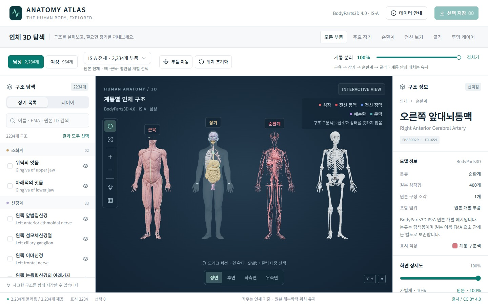

화면 상세도와 원본 데이터 분리
화면에서는 Worker로 표시 상세도를 계산하고, 내보낼 때에는 원본 모델을 사용하도록 분리했습니다.
라이브 · 인터랙티브 3D
계통별 분리, 구조 검색, 숨김과 투명도, 원본 모델 내보내기를 지원하는 한국어 3D 해부학 탐색기입니다.

BodyParts3D
HRA · 전신 커버리지 차이
01 / INTERACTION
참조 데이터를 한국어·영어 이름과 계통으로 탐색합니다. 부품을 단독으로 보거나 투명도를 조절하고, GLB·OBJ·STL 형식으로 원본을 내려받을 수 있습니다.
ENGINEERING DECISIONS
화면에서는 Worker로 표시 상세도를 계산하고, 내보낼 때에는 원본 모델을 사용하도록 분리했습니다.
SCOPE & LIMITS
대한민국 · 한국어 / 영어